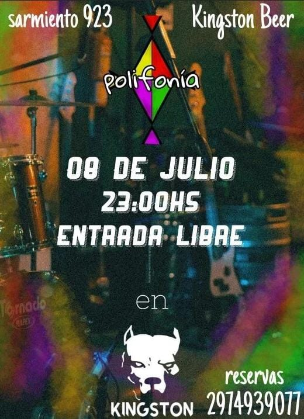
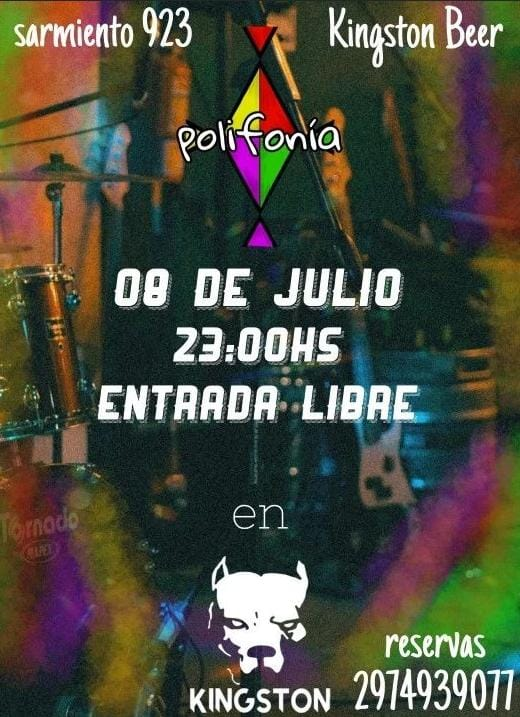
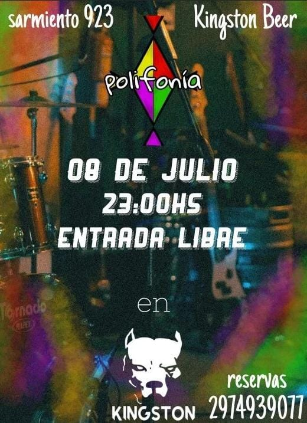

El propósito fundamental de esta organización es fomentar el conocimiento y la visibilidad de las actividades musicales llevadas a cabo por las diferentes bandas presentes en la región.

 


"Bandas Comodorenses" es una entidad sin fines de lucro que opera de manera independiente y autogestionada. Su misión principal radica en la promoción y difusión de diversas actividades vinculadas al ámbito de las Bandas de Música que operan en la Ciudad de Comodoro Rivadavia y sus zonas circundantes.


El propósito fundamental de esta organización es fomentar el conocimiento y la visibilidad de las actividades musicales llevadas a cabo por las diferentes bandas presentes en la región.

Además de su enfoque en las bandas musicales, Bandas Comodorenses también desempeña un rol crucial en la promoción de espacios como restobares y clubes, proporcionando una plataforma para difundir y dar a conocer los eventos en los que las bandas participan.